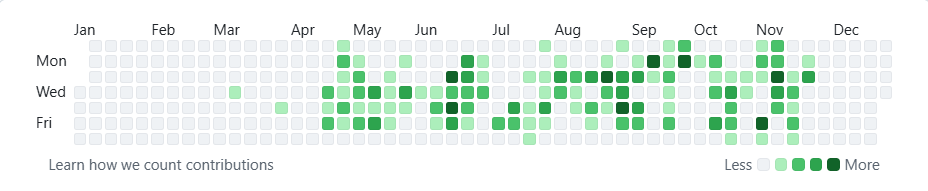

Currently Working at Chalk Digital
“Building, breaking, fixing — learning something new every day.”
Currently Based In
Delhi
Currently Working On
Chalk Canvas
Currently working on ChalkCanvas Software, fixing bugs and implementing new features to improve functionality and user experience.
Live Project • In ProgressWhile I Code
Focus Mode
How I Work
I focus on building fast, clean, and scalable systems — code that stays reliable even at 2 AM.
Clean Code • Consistency • Clarity“Good products are built with patience, great ones with discipline.”
— Developer MindsetGitHub Activity
371 contributions in 2025

Tech Stack
2025 • 8 months • Team Project
Worked on an enterprise canvas-based web application used internally. My role focused on long-term stability — fixing critical bugs, refining tools, and making the system predictable and reliable.
2024 • 5 months • End-to-End Ownership
Led the complete development of an institute’s digital platform, handling both frontend and backend while shaping the system from initial launch to daily operational use.
A small interactive scenario game reflecting my decision-making as a developer.
Scenario